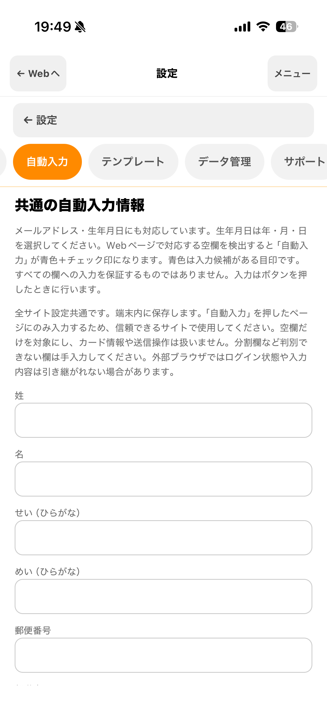

BROWSER PROFILES
閲覧環境をプロファイルで分ける。
ブラウザプロファイルは、ログイン状態やタブを分けて管理するための区分です。作成は必須ではありません。環境を分けたいときだけ追加してください。
プロファイルごとに分かれるもの
同じブラウザプロファイルで開いたタブは、Webサイトのログイン状態を共有します。別のブラウザプロファイルを選ぶと、そのログイン状態とタブを分けて使えます。プロファイル名は自由に付けられます。「仕事」「個人」などは名前の例で、特定の名前やサイトの登録は必要ありません。

ブラウザプロファイルの名前や色は、アプリ内で見分けるためのものです。Webサイト上でログイン中のアカウントを確認し、送信・購入・申込みの前に内容をご自身で確かめてください。
タブ・履歴・お気に入りの扱い
- タブを復元すると、開いていたURLとブラウザプロファイルを引き継ぎます。フォームへの入力内容は復元しません。
- 閲覧履歴とお気に入りは、ブラウザプロファイル間で共通です。
- 履歴からページを開くときは、履歴に記録されたプロファイルではなく、現在選択しているプロファイルで新しく開きます。
- 検索設定・自動入力ルール・テンプレートは、ブラウザプロファイルごとに使い分けられます。サイト別の検索設定は、ログイン環境を分ける機能とは別です。
プロファイルを切り替える
- ブラウザ画面の操作メニューを開き、「プロファイルを開く」を選びます。
- 一覧から使いたいブラウザプロファイルを選択します。
- 初めて使うプロファイルでは、対象のWebサイトを開いて必要なアカウントにログインします。
LikeAssistがログインボタンを押したり、フォームを送信したりすることはありません。サイトへのログイン操作はご自身で行います。
同じサイトでログイン環境を分けたい場合は、別のブラウザプロファイルを作成します。サイトごとの検索文字や検索ボタンを登録する「サイト設定」とは役割が異なります。
保存したID・パスワードをまとめて管理
「設定 → 保存ID・パスワード」では、どのWebサイトの情報がどのブラウザプロファイルに保存されているかを一覧で確認できます。必要な情報は別のプロファイルへコピーまたは移動できます。設定共有用のJSONファイルにはログイン情報を含めません。
ログイン画面で使う
保存情報があるサイトのID欄またはパスワード欄をタップして、使うアカウントを選びます。端末で本人確認した後に入力されます。該当する保存情報がない場合は、保存情報を使う案内を表示しません。入力内容を確かめてから、Webサイトのログインボタンをご自身で押してください。
- 「設定 → 保存ID・パスワード」で、保存先のプロファイルとアカウントを確認します。
- ログインページに戻り、ID欄またはパスワード欄をタップします。
- 使うアカウントを選び、Face ID、Touch IDまたは端末パスコードで本人確認します。
- 入力された値を確認し、サイト上でログインします。
新規登録や別アカウントの追加では、端末認証を求めません。同じID・パスワードがすでに保存されている場合は重複確認を省きます。保存済み情報を変更するときは、端末での本人確認が必要です。Appleの「パスワード」機能とは別のアプリ内機能です。
保存情報の利用案内をキャンセルすると、そのページを再読み込みするまでは同じ欄で案内を繰り返しません。キャンセル後に手入力してログインした場合、ログインを検知できると保存するか確認します。
ブラウザプロファイルの上限
無料プランでは3件、LikeAssist Proでは20件まで作成できます。用途を分ける必要がなければ、初期設定のプロファイルだけで利用できます。